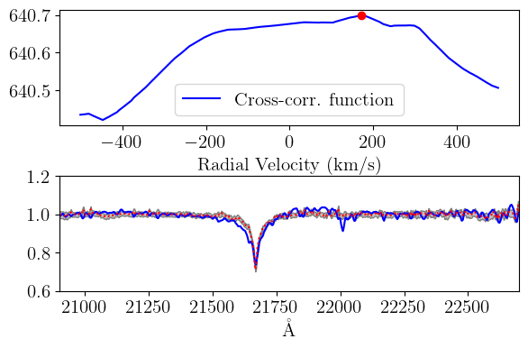
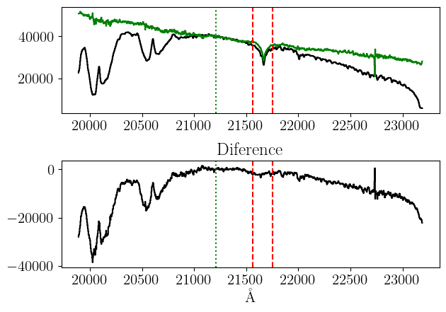

Figure 1: Characteristics in the region of K band. Grey: example of atmospheric transmission at Cerro Pachón. Magenta: Flamingos-2 Ks filter transmission. Blue: Scaled synthetic stellar spectrum (T=9000 K) from the GSL \citep{husser2013}. Black: Star HD21875 observed in Ks with Flamingos-2

Figure 2:Top: Correlation function between the template xsl_HD74721_A0V and the telluric star HD21875, the maximum corresponds to 172 km/s, indicated with the red dot. Bottom: Telluric star (blue) and template displaced by 172 km/s (red line with gray-shaded errors).

Figure 3: Top: Template xsl_HD174240_A1IV (green) and telluric star HD21875 (black) scaled at 2.12 microns (green dotted vertical line). Bottom: Template-telluric difference for quality control. Red dashed vertical lines indicate the range where the accuracy of the template is evaluated.


Figure 4: Signal-to-noise ratio of the observed science spectrum (black), the observed telluric star (red), and the final science spectrum after telluric correction (green).

Figure 5: Slit aperture correction (or slit-loss) for a point source with a PSF of FWHM=3.6 pixel and a slit width of 3 pixels. The PSF was simulated with a Gaussian kernel.